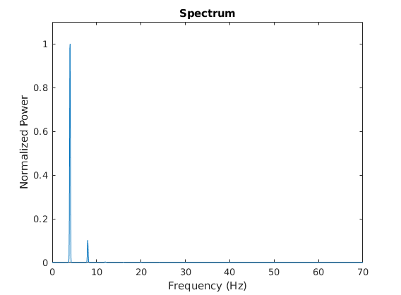
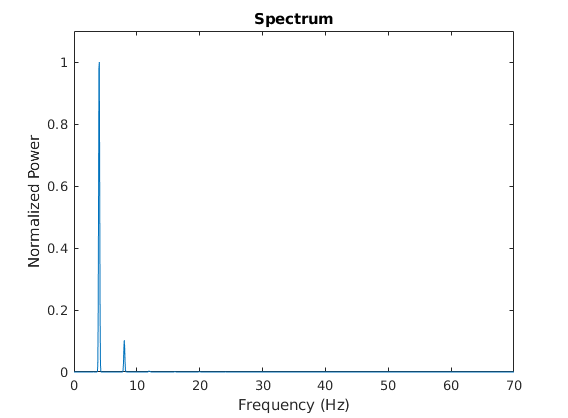
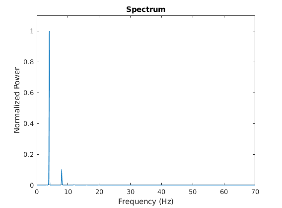
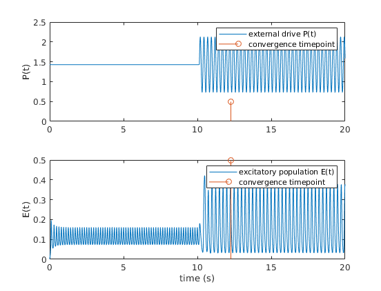

# Entrainment2019
Theoretical investigation of the effect of divisive inhibition on entrainment
This is the readme for the paper:
Papasavvas CA, Trevelyan AJ, Kaiser M, Wang Y (2020) Divisive gain modulation enables flexible and rapid entrainment in a neocortical microcircuit model. J Neurophysiol 123:1133-1143
This model was contributed by C Papasavvas.
Use the script entrainmentDemo to manipulate the parameters (initial phase diff., amplitude, and frequency) and run the simulation.
A parameter set is loaded from optimSets.mat and the function transformSet is used to transform a 5-parameter set to an 8-parameter set by filling in the known connection weight ratios.
The script calls the function solverODEvarInput2 which collects all the parameters and runs the enrtainment scenario/simulation
The ODE solver calls the modelFunqNELvarInputPhase which describes the model
The freq_analysis2 function is called after the ODE solver to do spectral analysis on the generated signal
The entrainmentDemo in its default state produces the following graphs:

if the phase is changed to 0 in the entrainmentDemo.m file then a graph that corresponds to Fig3A is produced
